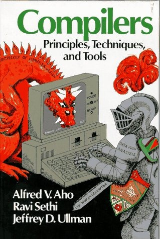

Compiladores

Compiladores ahora es un ramo electivo para ingeniería en computación, en la facultad en que estudié1. Al menos cuando yo estudié me parece que era obligatorio, y creo que debería ser un ramo obligatorio.
Ignoro por que la Universidad de Chile decidió hacer este ramo optativo, ignoro también cuanta gente toma esta materia cada semestre,también he escuchado que la matrícula en computación ha bajado, espero que algún académico me confirme esa información.
Como sea, creo que la la no obligatoriedad del curso de compiladores es un error, porque es uno de los ramos que mejor sintetiza todo lo aprendido en la carrera.
Cuando haces un compilador aplicas:
-
Estructuras de Datos (AST, Grafos de Colores)
-
Algoritmos, Teorías de Autómatas, Teorías de Lenguajes Formales
-
Fundamentos de Lenguajes de Programación (en el diseño del lenguaje)
-
Optimización
-
Programación en código de máquina (real o virtual)
-
Modularidad, Integración, bajo acoplamiento (la estructura del analizador léxico, sintáctico, semántico y generación de código ayuda a entender y aplicar por primera vez los conceptos de arquitectura del software
-
Ingeniería de software, diseño, análisis
Construir un compilador es el desafío que te forma como verdadero desarrollador de software, todo aquel que se quiera desempeñar como ingeniero de software debería intentar hacer un compilador alguna vez en su vida.
En mi vida profesional he construido 2 compiladores y diseñado 3 lenguajes (uno de los lenguajes usaba el pre procesador de C, así que era en realidad un conjunto de macros).
Estos lenguajes son lo que hoy llamamos DSL, lenguajes de dominio específico, diseñados para resolver un problema específico. El primero fue desarrollado en conjunto con Marco Zúñiga. Tenía un compilador, una máquina virtual propia, y hacíamos capacitaciones y lo licenciábamos, ganamos algunos buenos dólares con SanScript, como lo llamamos. Un DSL para automatizar tareas de comunicación de datos.
El segundo compilador era en realidad un traductor, que traducía de una suerte de markup tipo Haml y generaba páginas JSP. Lo divertido era que además eran resueltas con un filtro implementado con un servlet, que interpretaba los archivos con extensión .edc (mis iniciales) y generaba las páginas jsp en un caché. Las contrapartes técnicas con que interactué en ese tiempo siempre me preguntaba que eran estas páginas con extensión ‘.edc’ :smile:
Pero nunca he hecho un compilador de un lenguaje de propósito general, a pesar de que tengo la idea de hacerlo desde hace muchos años. Ahora que todo el mundo tiene ganas de matar Java, se me ocurrió que es momento de mostrar mi propuesta, de modo de que la primera versión de mi lenguaje corra sobra la Java Virtual Machine.
Ogu
El lenguaje se llama Ogu, su nombre es un homenaje al personaje creado por el caricaturista chileno Themo Lobos, es un cavernícola muy simpático amigo de aventuras de Mampato2.
Este es un sencillo programa en Ogu:
println "Akarrú!!!"
Ninguna novedad dirán ustedes, hasta python hace eso, aunque traten de escribir este programa en Java :wink:
En este artículo voy a hacer una breve introducción, espero escribir más en los próximos días, donde iré describiendo las características de este nuevo lenguaje. Estoy aún en proceso de diseño, aunque hay ideas que tengo de hace años. Por cierto hay influencias de otros lenguajes, como irán notando. Lo importante es que consideren de que es muy probable que las cosas cambien.
Lo primero que hay que notar es que es un lenguaje con tipos estáticos, como Java, como Scala o como Haskell, es decir, toda variable debe tener un tipo, así que toda declaración de un símbolo en Ogu debe tener su tipo.
Acá hay un ejemplo de declaraciones en Ogu:
blog : String
ogú : Cavernícola
x, y : Int
Los dos puntos ‘:’ separan a la variable de su tipo.
La asignación en Ogu es con el signo ‘=’, y sirve para inicializar una variable que ha sido declarada previamente, por ejemplo:
blog = "La naturaleza del software"
ogú = Cavernícola(nombre:"Ogú", grito: "akarrú!!!)
x = 1
y = 2
Por supuesto las variables pueden tener un valor inicial al declararse:
blog : String = "La naturaleza del software"
ogú : Cavernícola = Cavernícola(nombre : "ogú" )
x, y : Int = 1, 2
Pero Ogu tiene cierta flexibilidad, que permite tranquilizar a los amantes de los lenguajes dinámicas, al inferir tipos:
blog := "La naturaleza del software" // blog es de tipo String
ogú := Cavernícola(nombre: "ogú") // ogú es de tipo Cavernícola
x, y := 1, 2 // x e y son de tipo Int
Habrán notado que el nombre de las variables lleva acentos, esto porque Ogu acepta(rá) código escrito en Unicode.
Otra cosa importante, en Ogu si algo empieza con mayúsculas es la declaración de una clase, si empieza con minúsculas es una variable.
Pero todas las variables son inmutables, es decir, no puedes cambiarles el valor una vez asignada:
x := 1
x = 2 // error!!!
Si necesitas que las variables sean mutables debes declararlas anteponiendo la palabra reservada ‘var’:
var x := 1
x = 2 // ok, porque x es mutable
Esto es importante porque Ogu privilegia la programación funcional, como veremos más adelante.
Ogu es como el lenguaje Scala, soporta 2 paradigmas de programación: funcional y orientado al objeto. En Ogu la diferencia entre funciones y clases es algo difusa (el uso de mayúsculas para clases ayuda a desambiguarla).
Funciones:
Veamos como declarar una función:
factorial : Int --\> Int
factorial 0 = 1
factorial n = n \* factorial (n-1)
Este ejemplo muestra que Ogu privilegia el paradigma funcional, y sigue una sintaxis muy parecida a la de Haskell.
El valor de una función está determinado por la expresión a la izquierda del signo ‘=’.
Lo que tenemos son patrones, o casos, que definen a la función. Podemos escribir factorial de esta forma abreviada:
factorial : (n:Int) --> Int = (n == 0) 1 else n \* factorial(n-1)
Si hay más de una expresión en una función estas deben ir rodeadas de llaves {}.
En la forma abreviada deben ir los argumentos nombrados entre paréntesis, y es opcional nombrar el resultado.
El valor de la función será el valor de la última expresión, a menos que el resultado haya sido nombrado:
suma : (a,b : Int) -> Int = { a+b // el valor es a+b\
}
suma2 : (a, b : Int) -> (resultado: Int) = {
resultado = a+b
println "el resultado es " + resultado // el valor de suma2 es
resultado
}
Si la función no recibe argumentos se debe usar la expresión () –> Tipo, esto con el fin de resolver ambiguedades:
uno : () -> Int = 1 // siempre retorna 1, pero es una función
uno := 1 // es la variable uno
Si la función no retorna valores se debe usar –> Void, o solo colocar los parentesis:
saludar : () -> Void = println("hola" )
saludar : () = println("hola" )
Veamos como declarar una clase
Persona : (nombre: String, edadInicial: Int) ={
**var** \_edad = edadInicial
saludar : () = println "hola " + nombre
celebrarCumpleaños : () = {\
_edad = \_edad + 1\
println "¡¡ feliz cumpleaños " + nombre + "!!"\
}
}
Como verán Ogu es un lenguaje que privilegia la economía sintáctica. Los argumentos nombre y edadInicial son atributos de la clase, y no es necesario declararlos en el cuerpo, _edad también es un atributo, pero privado. Los identificadores que empiezan con _ son privados, como en Python.
Los nombres que empiezan con mayúsculas son tipos o clases, y los nombres que empiezan con minúsculas son nombres de funciones o variables. Si un nombre empieza con _ y luego viene mayúscula es un tipo privado.
Noten que junto con declarar la clase Persona, hemos definido el constructor de la clase.
Ahora podemos presentar la declaración de Cavernícola:
Cavernícola : (nombre, grito : String)
Cavernícola : (nombre : String) = Cavernícola(nombre, "akarrú!!")
Cavernícola = {
pelear : () = {\
println "yiko pelea!"\
println grito\
}
}
Fíjense como hemos declarado Cavernícola con dos constructores.
Hay más cosas que contar, pero esto es un anticipo de Ogu, que espero les guste. El proyecto será opensource y se publicará en github. Por ahora sólo existe un parser, el que aún tiene algunos problemas con ciertas ambigüedades. Espero tener pronto una primera versión para que empiecen a probarlo.
Este es el primer artículo sobre Ogu, en la medida que vaya resolviendo problemas de diseño iré publicando más.Espero sus opiniones, preguntas y sugerencias.
-
Malla de Ingeniería Civil en Computación impartido por el DCC (para los que ingresaron antes de 2007, y los que ingresaron después de 2007). ↩︎
-
En realidad el personaje se llama Ogú (con acento en la u), y su grito de guerra es Akarrú, sí, Akarrú. ↩︎